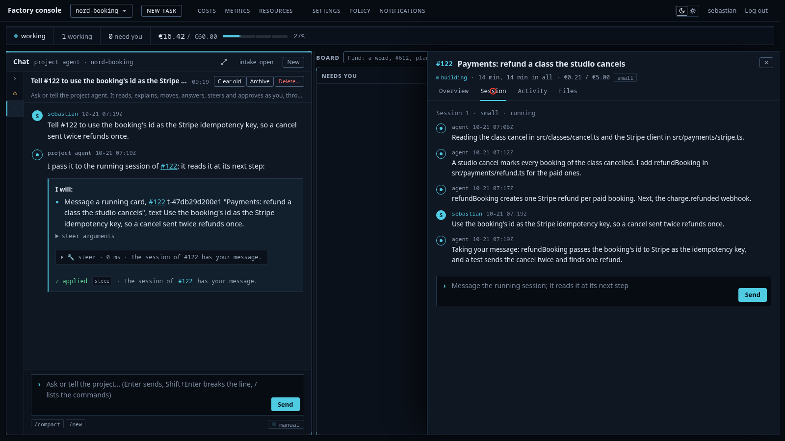
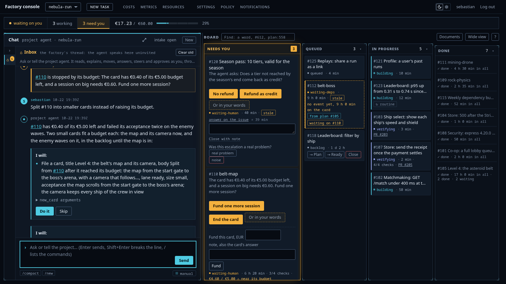
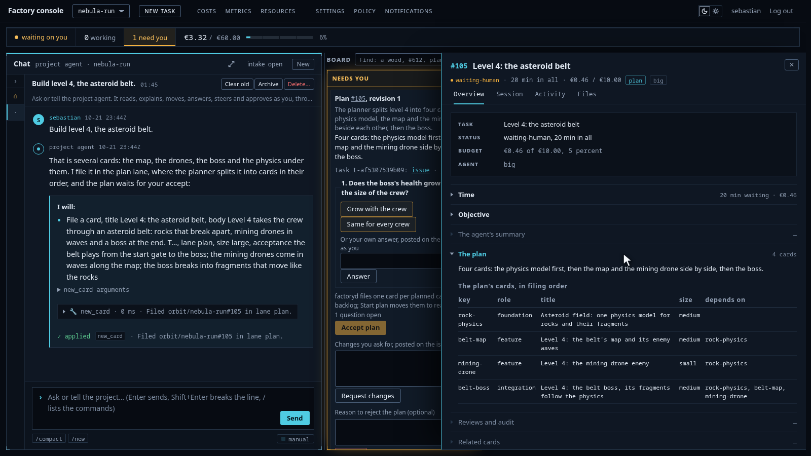
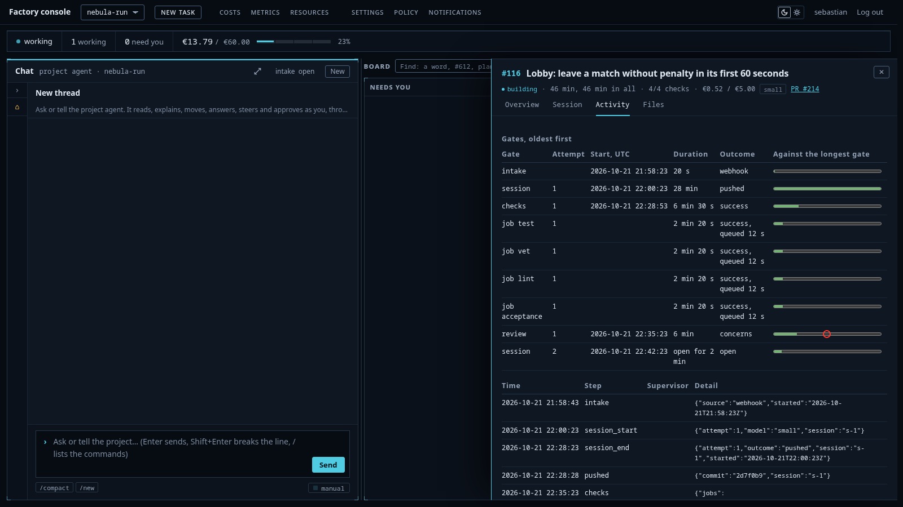
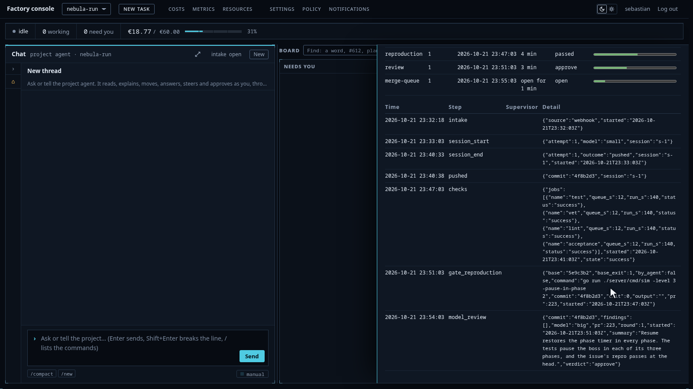
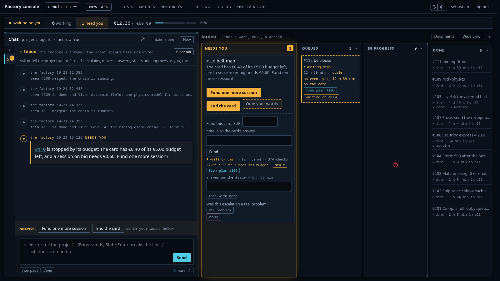
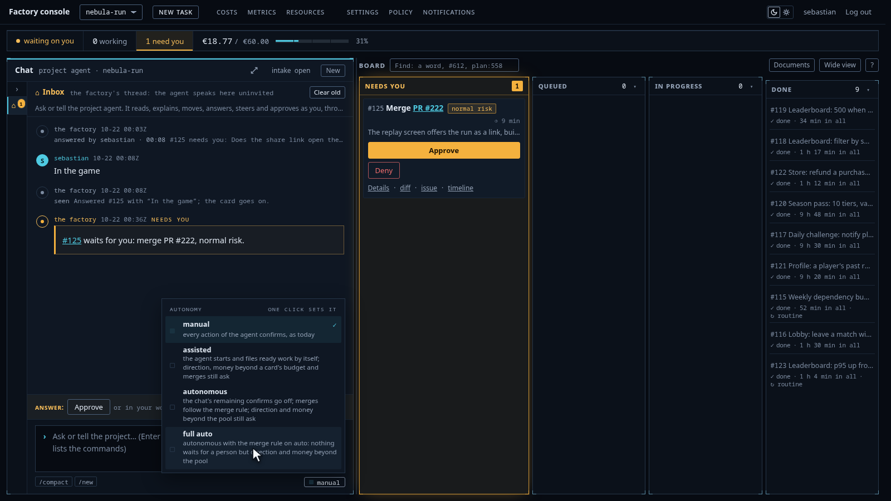
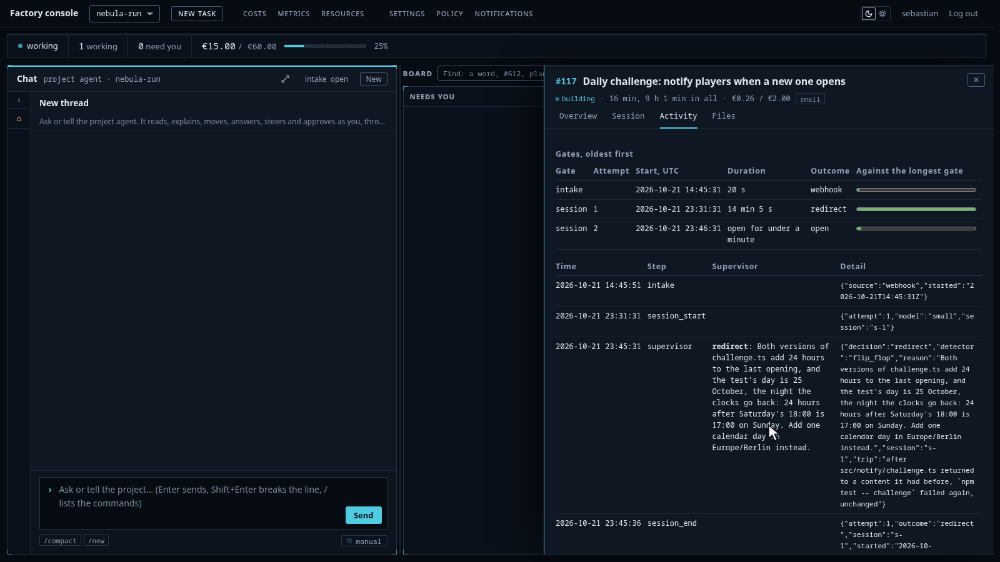

Talk to an agent while it works
A line typed into the chat reaches the running session. The agent's next turn takes it, and the gates still judge the result.
AI software factory · Self-hosted · Source available
Write a roadmap. Agents build it card by card, each in its own sandbox on your servers. Nothing merges until the checks pass.
Use hosted models or your own.

Built for teams that cannot sign off a hosted coding agent: regulated industries, and companies where security and compliance decide the tool choice.
Everything else runs on its own.
Six things the console shows. Each one links to the file, the test and the run behind it.

A line typed into the chat reaches the running session. The agent's next turn takes it, and the gates still judge the result.

A big request becomes a spec with criteria. Each criterion names its test, and one gate runs them all on the assembled feature.

A stronger model reads every diff. Its finding goes back to the agent. A review with no verdict is itself a finding.

An issue or an alert becomes a card within a minute. The fix must fail at the base commit and pass at the head.

Caps per task, per day, per month and per project. At a cap the factory stops and asks: fund it or end it.

From manual to full auto. Forbidden paths and database migrations stay human at every level.
Its own sandbox and a few named hosts, nothing else. What it writes still has to pass the gates.
The model can write code that is wrong on purpose, and that code can pass the checks. The review, the hold-out tests and the audit make that hard, not impossible. The threat model names every hole we know.
The source is published. You run it on your own servers, and the licence says what you may do with it.
Model calls go through one gateway. Point it at a hosted API or at your own model.
Everything you configure is a file in your repository: the process, your prompts, the caps.
A project may only tighten: four stages stay in every process, and no file can remove them. The three layers in full.
Every guarantee lives in a schema, a check, a gate or a route. A prompt rule is the last resort. Open a module for what enforces it.
gVisor, non-root, read-only root, no service account token, the metadata address blocked, default-deny egress, an egress probe before the agent starts, the write token minted after the agent is dead and used once.
Nine kinds of stage. Four of them stay in every process, and a process file cannot remove them. A deleted or weakened test is a finding. A review that gives no verdict is a finding on the reviewer's card.
A separate session writes hold-out tests that no sandbox can see. When a hold-out fails, an audit names the defective side: the test, the code or the spec.
The hold is taken under a database lock. The model's output is clamped to the amount held. The real cost is booked after the call. A missing cap reads as zero, which stops all spend.

One durable workflow per task. Thirteen detectors watch each session for no write, repetition, the same failure, the same call, flip-flop, churn, wall clock and spend with no push.
A stalled session gets a nudge, then a supervisor, then a fresh session on the stronger model. A human sees it only after the session cap.
The metrics page keeps the four DevOps delivery metrics: deployment frequency, lead time for changes, change failure rate and time to restore. It also keeps cost per card, per project and per week. All of them read from the same ledger as the board.
The factory builds itself. Every commit carries the task, the session, who asked and who approved.
An outsider's issue is screened for injection before any session runs.
The console was designed by image models and an independent critic. Every image has its sidecar.
The architecture: the five planes and the three layers.
A table of guarantees, not of features. Every cell was checked against the vendor's own documentation on 22 October 2026.
| Guarantee | This factory | GitHub Copilot cloud agent | Cursor cloud agents | Devin | GitLab Duo Agent Platform | OpenHands | Factory |
|---|---|---|---|---|---|---|---|
| The control plane runs on your servers, source published | Yes. Self-hosted on rented commodity servers, source published. | No. Runners can be yours, the control plane stays in GitHub's cloud. Closed source. | No. Workers can be yours, the control plane stays in Cursor's cloud. Closed source. | No. Outposts workers can be yours, the control plane stays in Cognition's cloud. | Partial. The whole stack self-hosts under a paid, source-available licence. | Yes. MIT core. The enterprise tier is source-available and paid. | Partial. Factory Private is in preview, by quote, closed source. |
| Your own model behind the same gateway, run end to end | Yes. Hosted APIs and self-hosted models sit behind one gateway. The factory has completed tasks on a self-hosted model. | No. The cloud agent offers a hosted model list. | No, hosted models. | No, its own models. | Yes. vLLM or any OpenAI-compatible endpoint, documented. | Yes. vLLM, Ollama and LM Studio, documented. | Partial. Any OpenAI-compatible endpoint in the CLI, no published run. |
| The agent never holds a push token | Yes. A fresh identity per task, minted after the agent is dead, used once, revoked. | Partial. It cannot run git push. The platform pushes for it, to one branch. | Not documented. The agent pushes its own branch. | No. Devin pushes itself, with the GitHub App's permissions. | No. The agent runs with the user's token, a composite identity. | No. The token sits in the agent's shell, and it runs git push. | No. The agent runs with the user's own git credentials. |
| The money is held before each call, and at the cap it asks | Yes. The hold is taken under a database lock. At a cap: fund or end. | No, organisation and user budgets. | No. The cap lags, and usage stops without a question. | No. Limits per session, user and organisation block work at the cap. | Partial. Caps per user, group and subscription pause use. No hold before a call. | No. Budgets and a per-run cap stop the run with an error. | No. Rolling rate limits, long tasks pause at the limit. |
| A fix must fail at base and pass at head | Yes. An issue or an alert files the fix card. The gate runs the repro command at base and at head. | No gate. Issues, schedules and code scanning alerts start tasks. | No gate. Sentry, PagerDuty, Linear and labels start runs. | No gate. PagerDuty, Linear and GitHub issues start sessions. | No gate. Failed pipelines, merge requests and scans start flows. | No gate. Issue labels and webhooks start tasks. | No gate. Sentry, PagerDuty, Slack and GitHub events start runs. |
| The gates run the tests the criteria name, and a file cannot lower the floor | Yes. The criteria gate runs each named test and requires it green. Four stages stay in every process. | Partial. Rulesets require checks. No criteria name tests. | No. Bugbot's review advises. No named-test gate. | No. Devin Review comments. Merge gating is your branch protection. | Partial. Policy pipelines a project cannot remove, on Ultimate. No criteria name tests. | No. Hooks and a critic are optional. No named-test gate. | Partial. Organisation policy a project cannot weaken. No named-test gate. |
| The process is a set of YAML files | Yes. Lanes, stages, merge rule. Ours is spec-driven, bring your own. | Partial. Agents and workflows in YAML, the merge rule in settings. | Partial. Files set the environment, hooks and review, not the stages. | No. Files hold the environment, rules and skills, not stages or a merge rule. | Partial. Flows, agents and CI are YAML. Triggers are set in the UI. | Partial. Automations sync to YAML in Git. No stages or merge rule. | Partial. Settings, hooks and skills in the repository. No stage process. |
| Delete everything and rebuild from Git and a bucket | Yes. Rebuilt from the repositories and a backup bucket, rehearsed on 13 October. | No, SaaS. | No, SaaS. | No, SaaS. Only Outposts workers rebuild from Helm and Terraform. | Yes, self-managed. Helm charts, and backup and restore through a bucket. | Partial. Helm charts and Terraform. The backup is database dumps only. | No, SaaS. The Private preview is undocumented. |
The source of every cell: the comparison file. Chat intake stays out of the table, because 78 of the 148 tools in our market sweep score high on chat.
The open limits live in the threat model: the hosted model APIs see diffs and briefs, the Go module proxy is a covert channel of a few hundred bytes per request, gVisor is not a microVM, and the model can write code that passes the checks.